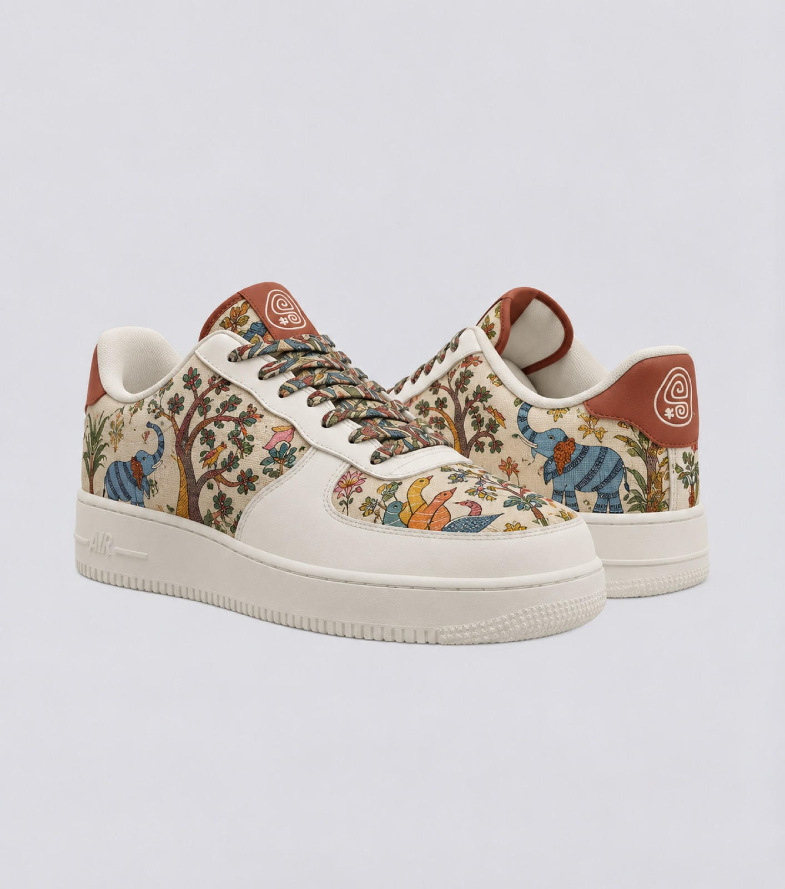
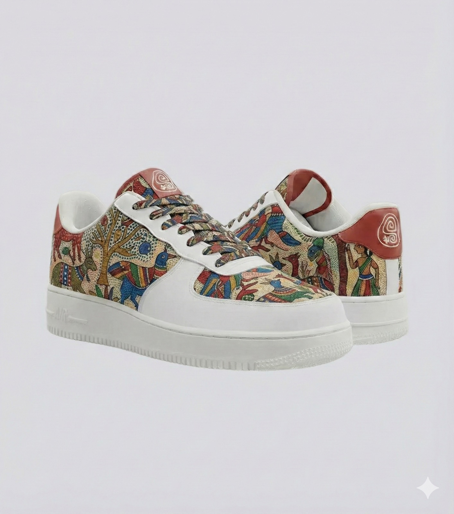
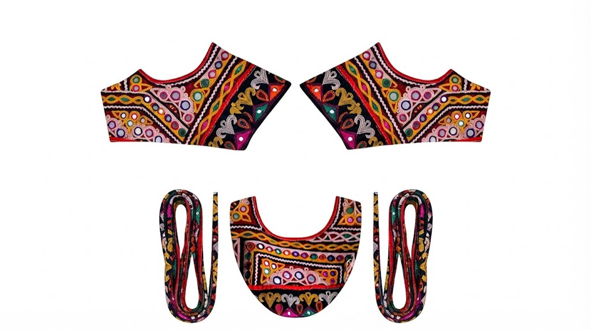

SVAROOTS
Timeline
The problem
Gen Z in India is mixing Indian textiles into everyday streetwear, but mainstream sneakers all look alike. Customisation exists, but it’s permanent: once you design a pair, it’s done. Changing your style means buying more shoes, and that means more waste.
What I did
Market research & Brand Strategy · Competitor mapping · Brand identity & logo · Product concept · App UI (in progress)


The Rise of
Contemporary Streetwear
“Social media accelerated the popularity of Indo-western styling among Gen Z.”
Our Outfits Evolved.
Our Sneakers Didn’t.

“Nike, Adidas, Converse, Puma. Different brands. Same visual language.”
But what if our shoes could evolve with us?
If personal style changes with our moods and identities, could our footwear change with it too? We explored how existing sneaker brands approach customisation and modularity, and what their approaches make possible.

Competitive
Landscape

We mapped key players to understand how brands approach customisation, culture, community and modularity.

What our competitor map told us:
SEYES · Modular footwear
Interchangeable shoe components showed one approach to modularity.
Banjaaran Studio · Cultural storytelling
Footwear can communicate heritage and identity.
Gully Labs · Contemporary Indian identity
Local cultural references can inform contemporary sneaker design.
IKEA · Adjacent inspiration
The experience of building something can foster a sense of ownership.
We saw an opportunity to let people change their sneakers as often as they change their style, using reversible designs inspired by Indian textiles.
So we asked...
How might we design
sneakers that evolve
with the wearer?

Meet

SVAROOTS
Modular sneakers with interchangeable handcrafted textile
patches that evolve with your style.

Build Your Pair
Choose from 4 interchangeable side patches, 3 toe patches and 3 lace designs of Kashmir

Choose → Customize → Evolve
Browse regional textile collections or create your own
combination using our 3D Customization Lab
OR.....
Explore Regional
Collections

Each collection celebrates the textiles and craft
traditions of a different Indian state!
But why target Gen Z?
India's Gen Z represents a significant audience for Svaroots to explore, creating an opportunity to bring personal expression and Indian textile influences into everyday footwear.


How it Works

Rooted in
Culture.
Designed for
Change.
The base sneaker and patch packs make that ongoing change part of the business model: keep the pair, add a new look.
Business Model
 BASE SNEAKER -
BASE SNEAKER -₹3,999+“razor”
PATCH PACK -₹999/3 PATCHES“blade”
3 Revenue Streams
Direct-to-Customer Sales“Layer 1”
Monthly patchdrop boxes“Layer 2”
Workshops,Gifting, Collabs“Layer 3”
Go-To-Market
Digital Only“Phase 1: Build the cult”Pop-ups + Campus +Community“Phase 2: Expand touchpoints”

More Than
a Shoe
From product to identity
Branding &
Visual Identity
Finding the name
Before Svaroots, we explored what the name needed to express.


SVA
From Svaroop, meaning one's true form and essence.
ROOTS
Your Indian heritage and personal beliefs.
03 / Developing the symbol
Developing the symbol
From our naming mind map, we identified five brand routes. Each of the five team members chose a primary and an alternative direction to explore.
Five routes from our brand exploration
My primary route was Self-expression; I also explored Gen Z pop culture as an alternative direction.
Exploring two directions
I explored Self-expression and Gen Z pop culture through quick sketches and visual ideas.


From sketches to concepts
I selected three concepts from my sketches, then developed each one digitally, refining its form, proportions and details.


Mixing, merging, refining
Each team member shortlisted three concepts from their own explorations. We brought together ideas from all five members and tried different combinations, refining the form through multiple iterations.
The selected symbol
One symbol, developed together.
The logo system

The visual world
The visual direction brings together the richness of Indian textiles, the energy of contemporary streetwear, and the individuality of youth culture. Traditional patterns and craft represent Svaroots’ cultural roots, while streetwear and community reflect its modern, expressive spirit. These influences informed a colour palette that balances the warmth of terracotta red and earthy green with the depth of indigo blue, creating a visual identity that feels rooted in heritage yet contemporary in expression.
- Heritage
- Craft
- Individuality
- Community
- Evolution

- PassionTerracotta Red#A42100
- HeritageIndigo Blue#263661
- GroundedEarthy Green#048419
- PurityHarvest Yellow#E0B23F
- PurityPowder White#F5F2EB
- Midnight Black#151515
The palette balances colours inspired by traditional Indian textiles and craft with tones that feel bold and contemporary. Warm terracotta, deep indigo, and earthy green establish a connection to cultural roots, while yellow, white, and black provide contrast and balance across the visual identity.
Typography with character
Svaroots
Playful · Handmade · Expressive
Atma gives Svaroots its distinctive personality, connecting individuality and customisation with a subtle Indian sensibility.
Created to Create
Clear · Versatile · Readable
Nunito Sans balances Atma’s expressive forms with legibility and a flexible weight range for digital interfaces and longer text.

Expressing the brand
Illustration style
A mixed-media approach reflects Svaroots’ spirit of self-expression, blending Indian craft with the playful, experimental energy of contemporary streetwear.

Photography style
Photography focuses on texture, detail, and real-world wear to make the craftsmanship tangible and show how Svaroots fits into everyday self-expression.

Product placement
Keep the sneaker and its craftsmanship visible, even in expressive settings.

From brand to interface
Rounded, outlined icons balance Svaroots’ playful personality with functional clarity, keeping the interface approachable, consistent, and visually lightweight.

Patterns from the mark
The symbol becomes a repeatable graphic in red and white.

Made tangible
Business card

Inspired by shoebox labels, the business card carries Svaroots’ product identity into its stationery, creating a cohesive brand experience beyond the sneaker itself.
Shoe box

The shoe keeps changing — so the app has to let you change it...
The
Svaroots
App
Mobile app · Information architecture, flows, wireframes, UI & design system · solo
Svaroots isn’t just a store. You can shop ready-made combos, design your own sneaker or patch, and borrow ideas from other Svarooters — so the app is built around three connected spaces, not three separate ones.
Information architecture · 01 / Starting with intent
What would my customer open the app for?
Before drawing a menu, I listed the things someone might come to Svaroots to do. Pairing each goal with an action and a rough frequency helped me see which tasks needed a clear route through the app.
| User goal | Action | Frequency |
|---|---|---|
| Build a sneaker | Customise | High |
| Save a design | Customise & save | High |
| Get inspired | Community | Medium |
| Buy patches of different regions | Shop for patches | High |
| Make my own patch | Customise | Low |
| Look for limited drops | Shop | Medium |
| Buy post care | Shop | Low |
| Track my orders | Profile → My orders | Low |
| Check my wishlist | Wishlist | Low / medium |
| Look at how shoes will look in real life | AR view | Medium |
| Look for gifts / premade boxes | Shop | Low |
| Buy shoes and patches of different regions | Shop | High |
| Buy base sneakers | Shop | Medium |
| Share designs that I made | Community | Medium |
| Look at how to stick patches on a shoe | Tutorials | Medium |
| Look at how to take care of the shoes | Tutorials | Medium |
The goal list led to an early sketch of how Shop, Create and Community might connect. I used it to explore the relationships between these spaces before deciding what belonged in each one.
02 / Finding the structure
From actions to destinations
I started by identifying the recurring tasks users would come to the app for, from shopping and customising sneakers to discovering inspiration. I grouped related features into three broader spaces, then worked through what each space needed to contain.
01 / Shop
- Base sneakers and regional patches
- Regional collections and limited drops
- Gift boxes and post-care products
- Artisan and textile stories
02 / Create
- Build a sneaker or patch
- Try combinations
- Save a design
03 / Community
- Discover designs shared by others
- Recreate a design in Create
- Buy a shared design as-is
While grouping the features, I also needed to distinguish between actions that could seem similar at first. I wrote down what each one meant from the user's perspective.
Cart
“I'm ready to buy this.”
Items the user intends to purchase.
Wishlist
“I like this, but not right now.”
Items the user likes but isn't ready to buy.


My Designs
“Designs that went unfinished.”
A space for unfinished designs, including drafts that can be completed later or designs that can be purchased.

Two profiles, but what belongs where?
While organising the features, I got stuck on how to structure the two profile ideas. Some features overlapped, and I wasn't sure which belonged where. To clarify this, I listed the features and grouped them by purpose.
Community profile
Public design identity
A space to show my creativity to the community.
- Show designs I've made
- Share creative ideas
My Svaroots
Personal account management
- My orders
- Payment details
- Account information
- Access to my Community profile
Once these distinctions became clearer, I stepped back to consider which destinations users should be able to access immediately. This helped me identify Shop, Create, and Community as potential primary navigation destinations.
03 / Looking outward
How do other apps help people find their way?
Once I knew what Svaroots needed to hold, I examined how shopping apps organise discovery, product decisions and return visits. Let’s take Nike as an example, then look at how these patterns compare across the other apps I studied.
Nike · adidas · PUMA · Bata · RapidBox · ALDO · ASICS · MoonPrint for customisation-flow inspiration · Venue as a conceptual reference
Nike / a closer look
Two ways into the shopping experience
Nike’s shopping experience supports two mental models: users can start with a product in mind or begin with a sport or activity. Both paths lead into product discovery, accommodating different shopping intentions.

I want a product
PRODUCT-LEDI have an activity in mind
ACTIVITY-LED Product discovery
Product discoveryTwo entry points. One shopping experience.
One catalogue supports different ways of finding a product.
A clear hierarchy for product discovery
I mapped Nike’s product category hierarchy to understand how users progressively narrow their choices during product discovery.

- Broad category

- Category 1
- Subcategory 1
- Subcategory 2
- Category 2
- Subcategory 3
- Subcategory 4
- Category 1
A progressive hierarchy helps people narrow their choices instead of scanning the whole catalogue at once.
From exploration to evaluation
THE SHOPPING MINDSET SHIFT.I also noticed how Nike’s shopping experience shifts from exploration to evaluation.


EXPLORATION
Browse · Compare · Narrow down
Browsing → Buying decision
EVALUATION
Size · Price · Delivery · Purchase
Supporting details help without obscuring purchase actions.
I also looked at what Nike didn’t give a dedicated place in its primary navigation in the app version I studied.
New arrivals & fresh drops
Deals weren’t a dedicated primary destination in the app version I studied
The wider competitor study
I also reviewed adidas, PUMA, Bata, RapidBox, ALDO and ASICS, with MoonPrint informing my questions about customisation. These were the lenses I used across the review, not a claim that every app showed the same pattern.
Shopping entry points and user intentions
Category hierarchy and product discovery
Product details and purchase decisions
Primary navigation and destination priorities
Reasons to return to the app
Customisation flows, where relevant
04 / Translating the observations
One app, three connected spaces
I separated what I observed, what I inferred for this project, and the IA decision I made. Some decisions came from Svaroots’ own goals rather than directly from a competitor.


| Across competitor apps | What this means | Svaroots decision |
|---|---|---|
| Nike, PUMA and adidas offer different routes into product discovery. | Let users start in different ways. | Shop for existing products; Create for custom designs. |
| Nike and adidas narrow discovery through categories, sports and collections. | Help users find relevant products without scanning everything. | Add Shop by State as another route into the catalogue. |
| Nike and PUMA keep size and purchase actions easy to access. | Make buying decisions straightforward. | Keep size selection and purchase actions on product pages. |
| adidas suggests complementary products and alternatives. | Support more discovery during shopping. | Connect related products and community designs to Shop and Create. |
| Nike, adidas and PUMA give users different reasons to return. | Make return-worthy content easy to find. | Place Drops, Membership and What's Svaroots? within Shop. |
| Nike, adidas, PUMA, Bata and RapidBox organise saved items and account access differently. | Keep frequently used utilities accessible without overcrowding navigation. | Search, Bag and My Svaroots are global utilities. |
| Several apps collect onboarding information to personalise the experience. | Ask only for details that improve the starting experience. | Onboarding collects only information useful for discovering products, textiles or customisation options. |
The competitor analysis helped me separate the three main spaces people use to shop, create and connect from the utilities they need across the experience.
ShopCreateCommunity
SearchBagMy Svaroots
05 / The final architecture
One app, three connected spaces
After refining the information architecture through four iterations, I arrived at a structure that connects product discovery, customisation and community while keeping frequently used utilities accessible.

Orange lines = only the cross-connections that matter for e.g. Shop → Create. Not every possible action.
Kept deliberately high-level; PLP, PDP, filter, sort and purchase controls belong in flows and UI. Notifications aren’t a destination; product tutorials live under Help & Support.
From structure to action · four journeys
Key user flows
With the final IA in place, I mapped four task flows to see how someone could move through the connected spaces: Shop and Community lead into Create, while Shop by State reaches the same catalogue.
Flow 1 · Build Your Own Combo from Shop
Shop → What is Svaroots? → Build Your Own Combo → Customise in Create → Add to Bag
Flow 2 · Recreate a community design
Community → Popular Designs → Edit / Recreate → Create — config loaded → Share or Add to Bag
Flow 3 · Shop by State
Shop → Shop by State → Maharashtra → All Products — filter applied → Add to Bag
Flow 4 · Build Your Own Patch
Create → Build Your Own Patch → Upload motif → Choose colours → Create patch